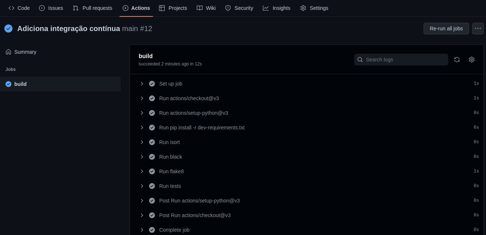

✅ Integração contínua
Conceito
O desenvolvedor integra o código alterado e/ou desenvolvido ao projeto principal na mesma frequência com que as funcionalidades são desenvolvidas, sendo feito muitas vezes.
Todo o nosso projeto será construído utilizando testes automatizados, e sempre rodaremos os testes localmente.
Mas como garantir que minha alteração não impacta com o restante do projeto, ter isto de forma simples e automatizada? Como garantir que a qualidade do código foi mantida?
Utilizaremos o serviço GitHub Actions para checar que nosso código não quebra a "build", ou seja, quando integrado o novo código ao sistema, todo o sistema continua funcional.
Basicamente, a grande vantagem da integração contínua está no feedback instantâneo. Isso funciona da seguinte forma: a cada commit no repositório, o build é feito automaticamente, com todos os testes sendo executados de forma automática e falhas sendo detectadas. Se algum commit não compilar ou quebrar qualquer um dos testes, a equipe toma conhecimento instantâneamente (através de email, por exemplo, indicando as falhas e o commit causador das mesmas). A equipe pode então corrigir o problema o mais rápido possível, o que é fundamental para não introduzir erros ao criar novas funcionalidades, refatorar, etc. Integração contínua é mais uma forma de trazer segurança em relação a mudanças: você pode fazer modificações sem medo, pois será avisado caso algo saia do esperado.
Ferramentas
Vamos instalar algumas ferramentas para nos ajudarem a terem um código bem organizado e testado.
🔠 isort
O que é?
isort é uma ferramenta que ordena de forma alfabética as importações, separando as bilbiotecas que são padrões da linguagem, as externas ao sistema e as nativas do próprio sistema.
Para que serve?
O isort irá modificar o seu código ordenando as importações alfabéticamente. Dessa forma, o bloco de importações fica organizado e padronizado no projeto.
Como instalar
Execute o comando abaixo:
python -m pip install isort
Configuração
Precisamos adicionar no arquivo pyproject.toml (você deve cria-lo) a seguinte configuração
[tool.isort]
profile = "black"
line_length = 79
black e isort.
Como executar
python -m isort .
✨ Black
O que é?
Black é o formatador de código Python intransigente. Ao usá-lo, você concorda em ceder o controle sobre as minúcias da formatação manual. Em troca, o black dá a você velocidade, determinismo e liberdade do irritante pycodestyle sobre formatação. Você economizará tempo e energia mental para assuntos mais importantes.
Para que serve?
O black é um formatador automático de código, ele irá modificar o seu código seguindo o guia de estilo do Python. Iremos configurá-lo junto ao nosso editor para que a formatação seja feita através de um atalho do teclado como shift + ctrl + i.
Como instalar
Execute o comando abaixo:
python -m pip install black
Configuração
Precisamos adicionar no arquivo pyproject.toml a seguinte configuração
[tool.black]
line-length = 79
Como executar
python -m black .
Assim evitamos um conflito com a ferramenta flake8.
🎨 Flake8
O que é?
Flake8 é um programa de linha de comando que verifica seu código e busca por erros ou formatações que não seguem o guia de estilo padrão do python, conhecido como PEP-8 . Além disso também verifica a complexidade ciclomática do seu código.
Para que serve?
É muito comum cometermos alguns erros de sintaxe, principalmente quando ainda estamos nos familiarizando com uma linguagem nova. Assim como durante o nosso dia a dia podemos esquecer algum código não utilizado. Esta ferramenta vai analisar o seu código e procurar possíveis erros, evitando assim que só ocorram no momento em que o código for executado. Esta ferramenta também aponta possíveis linhas que não estão seguindo o estilo de código definido para a linguagem python. Outra coisa bem comum quando estamos escrevendo código é que uma parte dele começa a se tornar tão complexa que há n caminhos por onde seu algoritmo pode seguir. Normalmente isto indica que devemos modificar o código para torná-lo mais simples e legível. O Flake8 irá apontar qual parte do seu código está complexa e que deve ser modificada. Esta ferramenta será integrada ao editor, dessa maneira, ao salvar o arquivo, teremos os erros encontrados apontados diretamente no mesmo.
Como instalar
Execute o comando abaixo:
python -m pip install flake8
Como executar
python -m flake8 --exclude=.venv
ℹ️ Pode ser necessário a intervenções manuais para que o código seja corrigido.
🕵️pre-commit (Menção honrosa 🏅)
Existem ferramentas que podem executar algum comando antes de um commit, com o objetivo de identificar possíveis problemas no seu programa antes do envio do código para o repositório remoto. Os comandos listados acima são bons exemplos de execuções que podem ocorrer neste momento. Uma das ferramentas que provê essa funcionalidade é o pre-commit. Para saber mais, clique aqui.
🐱 Configurando o GitHub Actions
- Crie a pasta
.github/workflowsdentro do seu repositório. Essa é a pasta padrão para as configurações do GitHub Actions.
mkdir -p .github/workflows
- Dentro da pasta crie um arquivo chamado
main.yml. Esse arquivo será utilizado para determinar quais passos serão executados na integração. O arquivo deve possuir o seguinte conteúdo:
name: main
on:
push:
branches:
- "main"
tags:
- "*"
pull_request:
branches:
- "main"
jobs:
build:
runs-on: ubuntu-latest
steps:
- uses: actions/checkout@v3
- uses: actions/setup-python@v3
with:
python-version: '3.10'
cache: 'pip'
- run: pip install -r dev-requirements.txt
- name: Run isort
run: python -m isort --check .
- name: Run black
run: python -m black --check .
- name: Run flake8
run: python -m flake8 . --exclude=.venv
- name: Run tests
run: python -m pytest .
Através do arquivo de configuração, nós definimos que alguns passos serão executados toda vez que houver um push ou a abertura de um pull request no repositório. Os passos executados serão os seguintes:
1 - Instalar todas as dependências necessárias.
2 - Executar o isort.
3 - Executar o black.
4 - Executar o flake8.
5 - Executar os testes.
Como instalamos várias bibliotecas, precisamos atualizar nosso arquivo de requisitos.
Como as bibliotecas que instalamos são para garantir a qualidade do código e não são necessárias na execução da aplicação adicionaremos elas ao arquivo dev-requirements.txt.
O arquivo ficará assim:
-r requirements.txt
pytest==7.1.2
httpie==3.2.1
isort==5.10.1
flake8==4.0.1
black==22.3.0
🎉 Pronto, a partir de agora, o GitHub Actions irá rodar todos as validações e testes do seu projeto de forma automatizada e indicará se a construção do mesmo está com problemas.
💾 Salvando a versão atual do código
Primeiro passo é checar o que foi feito até agora:
$ git status
On branch main
Your branch is up to date with 'origin/main'.
Changes not staged for commit:
(use "git add <file>..." to update what will be committed)
(use "git restore <file>..." to discard changes in working directory)
modified: dev-requirements.txt
modified: gerenciador_tarefas/gerenciador.py
modified: tests/test_gerenciador.py
Untracked files:
(use "git add <file>..." to include in what will be committed)
.github/
pyproject.toml
no changes added to commit (use "git add" and/or "git commit -a")
Vemos uma pasta não rastreada, precisamos avisar ao controle de versão que monitore a pasta e seu conteúdo.
git add .github/
Vamos adicionar também as novas dependências instaladas e os arquivos que possivelmente foram modificados por nossas ferramentas de qualidade.
git add dev-requirements tests gerenciador_tarefas pyproject.toml
💾 Agora vamos marcar esta versão como consolidada.
git commit -m "Adiciona integração contínua"
🐱 Por fim, envie ao GitHub a versão atualizada do projeto.
git push
✅ Pronto, agora o seu projeto está integrado com o GitHub Actions. 🎉
Confira na aba actions do seu repositório.
